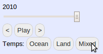

This tool was created by Jeremy as a part of the Google Summer of Code 2012.
This is a map visualization of ccc-gistemp, the Climate Code Foundation's implementation of the NASA Goddard Institute for Space Studies (GISS) Surface Temperature Analysis (GISTEMP).
The map shows global yearly temperatures from 1880 to 2010, represented as the difference from the baseline period (1950 - 1980). You can choose from temperature sets computed over land (by fixed land-based climate stations), over the ocean, or the full mixed set. Other available data include major population centers and weather stations.
This project is open source under the MIT License and available at code.google.com/p/ccf-mapview. We use Natural Earth Data, which is a great resource and in the public domain. Parts of the rendering were inspired by shapefile-js. If you have comments, questions, feedback, or want to contribute, we can be found at code.google.com/p/ccf-mapview.
Click and drag to move the map. Zoom by using the [+] and [-] buttons, the mouse wheel, or by double clicking on the map.
Click "weather stations" on the left. You should see many tiny squares - each indicates one weather station. Click on any station dot to see information about that station and the historical temperature as measured at that location.
Click "Ocean", "Land", or "Mixed" on the left (mixed is recommended).

You'll see a red, white, and blue grid covering the map - these colors indicate the temperature relative to the baseline period average (1950-1980). Red is warmer and blue is cooler. Click anywhere on the map to see more detailed information about that region, including the nearby weather stations and the temperature record at that location.
You can see historical temperatures by changing the year shown - drag the slider under the year backward or forward (initially it is set to 2010) or click the left (<) and right (>) arrows to skip year by year. You should see the temperature colors change as you do. To see how the climate has changed over the past 130 years, move the year slider all the way back to 1880 then click "Play".
If it is NOT WORKING in any way, please try a modern browser. Good ones include the most recent version of Google Chrome, Mozilla Firefox, or Safari. Older versions of Internet Explorer are especially likely to fail and are not recommended. If you are still having problems, please contact us.